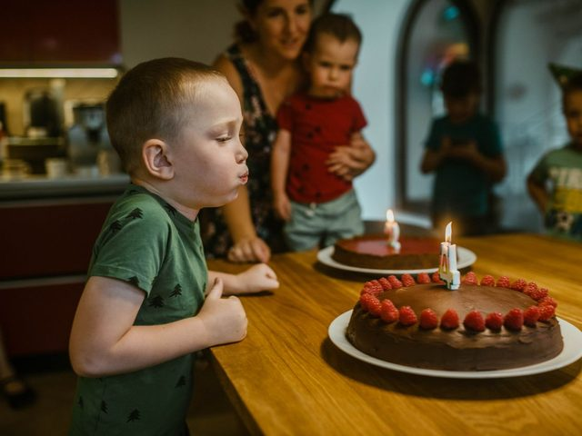
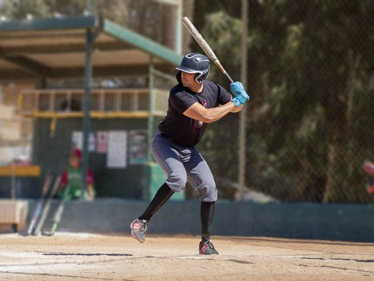
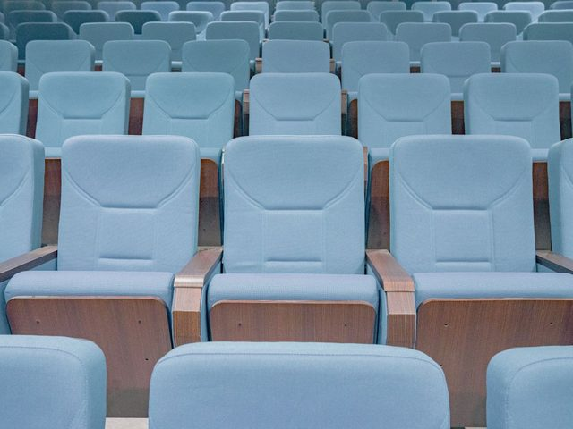
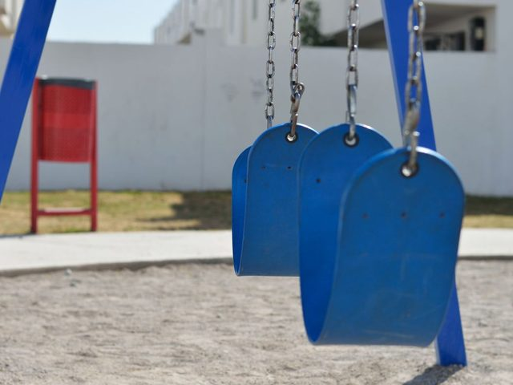
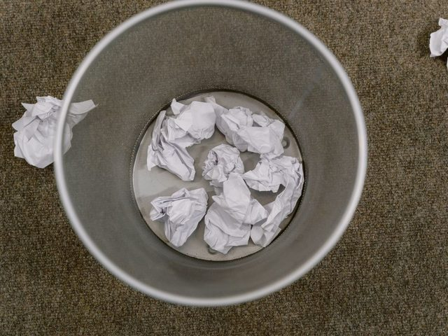

VOCABULARY · 主題 2000 字 UNIT 34
Other nouns．其他名詞
前面主題沒有收的常用名詞，共 111 個，分量比較多，可以分幾次背。注意哪些不可數：fun、garbage、gas、honey、mail、mud、news、trash…
共 111 個單字．點 🔊 聽發音
1actionn.
行動
We need to take action now.我們現在必須採取行動。
2agen.
年齡
at the age of 10 在十歲時
What is the age of that old temple?那座老廟有多少年歷史了？
3Americann./adj.
美國人；美國的
His father is American.他爸爸是美國人。

4bandn.
樂團
My brother plays the drums in a band.我哥哥在樂團裡打鼓。
5belln.
鈴；鐘
doorbell 門鈴
The bell is ringing. Class is over.鐘聲響了，下課了。

6birthdayn.
生日
My mother's birthday is in July.我媽媽的生日在七月。
7blankn.
空格；空白
fill in the blank 填空
Write your name in the blank.在空格裡寫上你的名字。
8bottomn.
底部
相反 top
Look at the picture at the bottom of the page.看這一頁最下面的圖。

9boxn.
盒子；箱子
複數 boxes
She put the gift in a box.她把禮物放進盒子裡。

10cann.
罐頭；罐子
trash can 垃圾桶
There is a trash can in the corner.角落有一個垃圾桶。
11casen.
案例；情況；箱子
pencil case 鉛筆盒
In that case, we will stay home.那樣的話，我們就待在家。

12castlen.
城堡
t 不發音
The king lives in a big castle.國王住在一座大城堡裡。

13cellphonen.
手機
Please turn off your cellphone in class.上課請關掉手機。
14centern.
中心
Nantou is in the center of Taiwan.南投在臺灣的中心。
15chancen.
機會
This is a good chance to practice English.這是練習英文的好機會。
16cheern./v.
歡呼；喝采
也可當動詞：cheer for 為…加油
We heard the cheers of the fans.我們聽到球迷的歡呼聲。
17choicen.
選擇
You have two choices: tea or juice.你有兩個選擇：茶或果汁。
18clubn.
社團；俱樂部
I joined the English club at school.我參加了學校的英文社。
19cornern.
角落；轉角
at the corner 在轉角
The store is at the corner of the street.那家店在街角。
20dreamn.
夢；夢想
也可當動詞
I had a strange dream last night.我昨晚做了一個奇怪的夢。
21e-mailn.
電子郵件
也寫 email
I sent her an e-mail this morning.我今天早上寄了一封電子郵件給她。
22errorn.
錯誤
There are three spelling errors in your letter.你的信裡有三個拼字錯誤。
23even.
前夕
Christmas Eve 平安夜
We had a big dinner on New Year's Eve.我們除夕夜吃了一頓大餐。
24excusen.
藉口
Excuse me. 不好意思
There is no excuse for being late.遲到沒有藉口。
25experiencen.
經驗
Traveling alone was a great experience.一個人旅行是很棒的經驗。
26factn.
事實
in fact 事實上
It is a fact that the earth goes around the sun.地球繞著太陽轉是事實。
27filen.
檔案；文件夾
Please save the file on your computer.請把檔案存在你的電腦裡。
28firen.
火；火災
Don't play with fire.不要玩火。
29foreignern.
外國人
g 不發音
Many foreigners come to Taiwan to study Chinese.很多外國人來臺灣學中文。
30flowern.
花
There are many flowers in the garden.花園裡有很多花。
31funn.
樂趣
不可數；have fun 玩得開心
We had a lot of fun at the party.我們在派對上玩得很開心。

32garbagen.
垃圾
不可數；＝trash
Please take out the garbage.請把垃圾拿出去倒。
33gasn.
瓦斯；汽油
不可數
Remember to turn off the gas.記得關瓦斯。
34ghostn.
鬼
h 不發音
Do you believe in ghosts?你相信有鬼嗎？
35giftn.
禮物
＝present
Thank you for the birthday gift.謝謝你的生日禮物。
36godn.
神；（大寫）上帝
Many people pray to God.很多人向上帝禱告。

37grassn.
草
不可數
The kids are lying on the grass.孩子們躺在草地上。
38groundn.
地面
He picked up a coin from the ground.他從地上撿起一枚硬幣。

39groupn.
團體；群
in groups 分組
We worked in groups of four.我們四個人一組合作。
40habitn.
習慣
Getting up early is a good habit.早起是好習慣。
41heatn.
熱度；高溫
不可數
I can't stand the summer heat.我受不了夏天的高溫。

42honeyn.
蜂蜜；親愛的
不可數
Bears love honey.熊愛吃蜂蜜。
43idean.
想法；主意
an idea
That's a good idea!那是個好主意！
44interestn.
興趣；利息
be interested in 對…有興趣
Reading is one of my interests.閱讀是我的興趣之一。
45Internetn.
網際網路
前面加 the
I often look for information on the Internet.我常在網路上找資料。

46interviewn.
面試；訪問
She has a job interview tomorrow.她明天有一個工作面試。
47itemn.
項目；一件物品
Please check every item on the list.請檢查清單上的每一項。
48joken.
笑話
tell a joke 說笑話
He told us a funny joke.他跟我們講了一個好笑的笑話。
49joyn.
歡樂；樂事
The baby brings joy to the family.寶寶為全家帶來歡樂。
50kindn.
種類
all kinds of 各種的
There are all kinds of fruit in the market.市場裡有各種水果。
51leadern.
領導者
She is the leader of our team.她是我們隊上的領導者。
52leveln.
程度；水平
This book is for beginning level students.這本書適合初級程度的學生。
53mailn.
郵件
不可數
Is there any mail for me today?今天有我的信嗎？
54mattern.
事情；問題
What's the matter? 怎麼了？
What's the matter with you?你怎麼了？

55meetingn.
會議
Dad is in a meeting now.爸爸現在在開會。
56membern.
成員；會員
He is a member of the school team.他是校隊的一員。

57metron.
地鐵；捷運
美國說 subway
We can get there by metro.我們可以搭捷運到那裡。
58mindn.
心；頭腦
change one's mind 改變主意
He changed his mind and stayed home.他改變主意，待在家裡。
59mistaken.
錯誤
make a mistake 犯錯
Everyone makes mistakes.每個人都會犯錯。

60mudn.
泥土；泥巴
不可數
My shoes are covered with mud.我的鞋子上都是泥巴。
61newsn.
新聞；消息
不可數；a piece of news
Do you have any good news?你有什麼好消息嗎？

62newspapern.
報紙
Grandpa reads the newspaper every morning.爺爺每天早上看報紙。
63noisen.
噪音；聲音
make noise 吵鬧
Don't make any noise. The baby is sleeping.別吵，寶寶在睡覺。
64noten.
筆記；便條
take notes 做筆記
She takes notes in every class.她每堂課都做筆記。
65ordern.
順序；命令；訂單
in order 按順序
Put the words in the right order.把這些字照正確的順序排好。

66partyn.
派對；政黨
複數 parties
We are having a party on Saturday.我們星期六要辦派對。
67photon.
照片
複數 photos
Can you take a photo of us?你可以幫我們拍張照嗎？
68pinn.
別針；大頭針
Be careful! There's a pin on the floor.小心！地上有一根別針。

69pipen.
管子；煙斗
Water runs through the pipe.水從管子裡流過。

70planetn.
行星
Earth is the planet we live on.地球是我們住的行星。

71playern.
球員；選手；播放器
He is a famous baseball player.他是有名的棒球選手。
72pleasuren.
榮幸；樂趣
It's my pleasure. 不客氣
A: Thank you. B: It's my pleasure.A：謝謝你。B：這是我的榮幸。
73powern.
力量；電力
不可數
Knowledge is power.知識就是力量。

74prizen.
獎品；獎
win a prize 得獎
She won first prize in the contest.她在比賽中得了第一名。
75programn.
節目；程式；課程
This TV program is very popular.這個電視節目很受歡迎。
76reasonn.
理由；原因
Is there a reason for his being late?他遲到有什麼原因嗎？
77reportn./v.
報告
也可當動詞
I have to write a report on birds.我得寫一份關於鳥的報告。

78robotn.
機器人
This robot can clean the floor.這個機器人會掃地。

79rockn.
岩石
We sat on a big rock by the river.我們坐在河邊的大石頭上。

80rootn.
根
The roots of the tree are very long.這棵樹的根很長。
81ropen.
繩子
jump rope 跳繩
Hold on to the rope.抓緊繩子。

82rosen.
玫瑰
He gave her a red rose.他送她一朵紅玫瑰。
83rulen.
規則
We should follow the school rules.我們應該遵守校規。
84salen.
拍賣；銷售
on sale 特價
These shoes are on sale.這些鞋子在特價。

85screenn.
螢幕
Don't sit too close to the screen.不要坐得離螢幕太近。

86seatn.
座位
Have a seat. 請坐
Is this seat taken?這個位子有人坐嗎？

87seedn.
種子
We planted some flower seeds.我們種了一些花的種子。
88sentencen.
句子
Please make a sentence with this word.請用這個字造一個句子。
89servicen.
服務
The service in this restaurant is very good.這家餐廳的服務很好。
90setn.
一套；一組
She bought a new set of dishes.她買了一套新的碗盤。
91siden.
邊；旁邊
on each side 在兩邊
There are trees on both sides of the road.路的兩旁都有樹。
92sightn.
視力；景象
My grandpa has poor sight.我爺爺視力不好。
93smilen./v.
微笑
也可當動詞
She always has a smile on her face.她臉上總是帶著微笑。
94spacen.
空間；太空
There isn't enough space for a sofa.空間不夠放沙發。
95storyn.
故事；樓層
複數 stories
Grandma told us a story about her childhood.奶奶跟我們說她小時候的故事。

96stringn.
線；細繩；弦
Tie the box with a piece of string.用一條細繩把箱子綁起來。
97subjectn.
科目；主題
Math is my favorite subject.數學是我最喜歡的科目。

98swingn.
鞦韆；搖擺
也可當動詞
The kids are playing on the swings.孩子們在盪鞦韆。
99thingn.
東西；事情
Put your things in your bag.把你的東西放進書包。
100ticketn.
票；罰單
I bought two movie tickets.我買了兩張電影票。
101tipn.
祕訣；小費
Here are some tips for learning English.這裡有一些學英文的祕訣。

102tooln.
工具
A dictionary is a useful tool.字典是很有用的工具。
103topicn.
話題；主題
What's the topic of today's class?今天上課的主題是什麼？

104trashn.
垃圾
不可數；trash can 垃圾桶
There was trash everywhere after the party.派對結束後到處都是垃圾。
105treatn./v.
請客；招待
It's my treat. 我請客
Let's have ice cream. It's my treat.我們去吃冰淇淋吧，我請客。

106treen.
樹
There is a big tree in front of my house.我家前面有一棵大樹。
107trickn.
詭計；把戲；惡作劇
Trick or treat! 不給糖就搗蛋
The magician showed us a card trick.魔術師表演了一個紙牌魔術給我們看。
108troublen.
麻煩；困難
be in trouble 有麻煩
If you cheat, you will get into trouble.如果你作弊，你會惹上麻煩。
109voicen.
聲音；嗓音
She has a beautiful voice.她有一副好嗓子。
110wayn.
方法；道路
on the way 在路上
Can you tell me the way to the station?你可以告訴我去車站的路嗎？
111wordn.
字；話語
How do you spell this word?這個字怎麼拼？
FOCUS
不可數名詞
| 不可數 | 要數時這樣說 |
|---|---|
| news | a piece of news 一則新聞 |
| a letter 一封信 | |
| garbage／trash | a bag of garbage 一袋垃圾 |
| honey | a spoon of honey 一匙蜂蜜 |
| fun、heat、power、mud、gas、grass | 不加 a、不加 s |
news 雖然有 s，卻是單數：The news is good.
FOCUS
常用說法
| 說法 | 意思 |
|---|---|
| make a mistake | 犯錯 |
| take notes | 做筆記 |
| have fun | 玩得開心 |
| take a photo | 拍照 |
| tell a joke | 說笑話 |
| change one's mind | 改變主意 |
| What's the matter? | 怎麼了？ |
| It's my pleasure.／It's my treat. | 我的榮幸。／我請客。 |
| on sale／on the way | 特價中／在路上 |
FOCUS
不發音的字母
| 單字 | 不發音 |
|---|---|
| castle | t |
| foreigner | g |
| ghost | h |
| sight | gh |